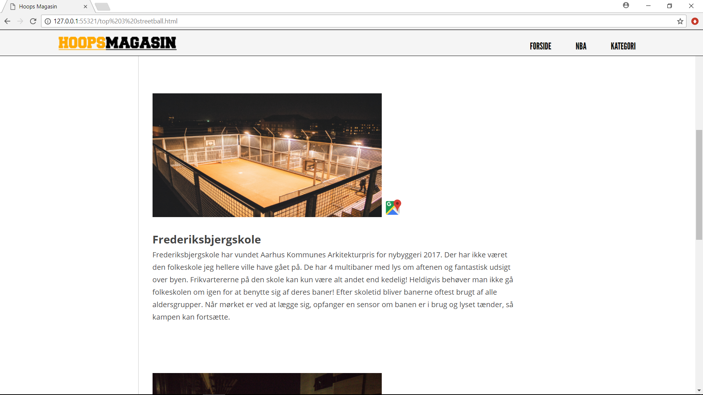
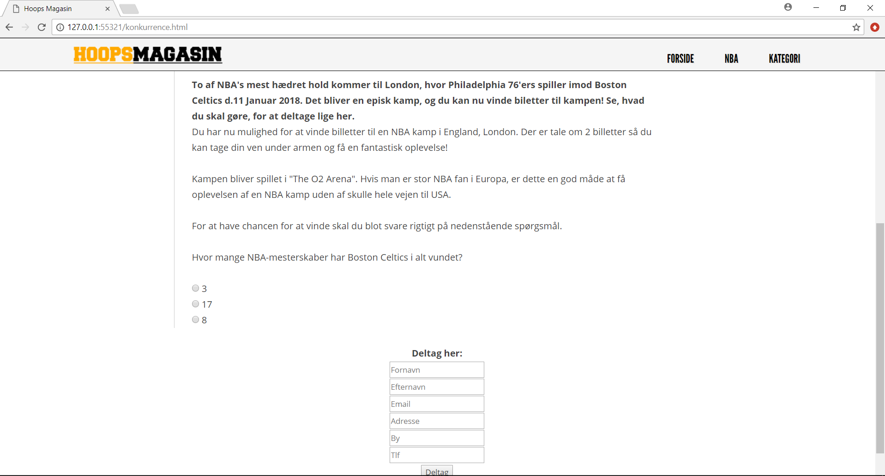
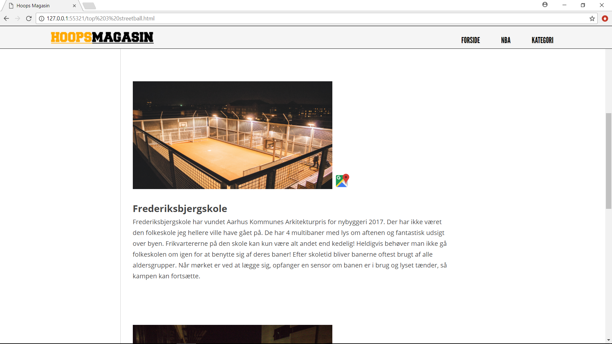
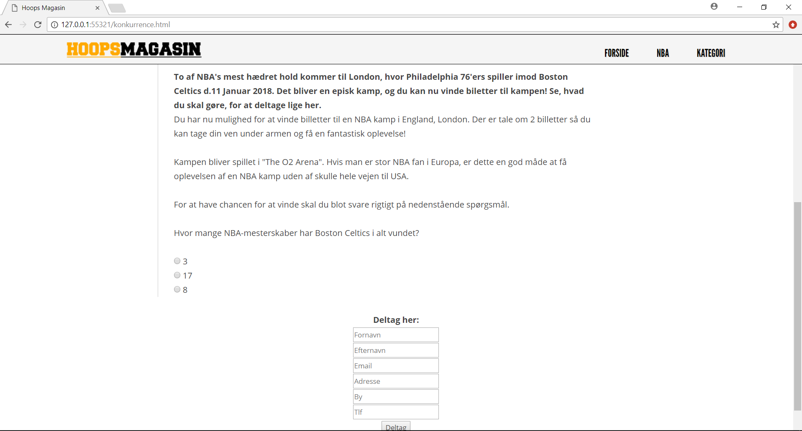

information
Galten, Danmark
+45 31 22 85 29
b-frisch@hotmail.com


 




Dette har været et selvstændigt projekt. HoopsMagasin er et online magasin for unge studerende der interesserer sig for basketball og alt hvad der hører med. Formålet med magasinet var at underholde og informere målgruppen. Research blev brugt til at skabe det bedste design og struktur af hjemmesiden for at ramme målgruppen. Content(artikler) på hjemmesiden er også nøje valgt ud fra brugernes meninger som jeg har fået indblik i gennem interviews.
Erhvervsakademi Aarhus (studie)
Logo-design, Web-layout, Content-Creator, Interview & Research.
Jeg valgte at lave hjemmesiden som en form for onepage med en scrolling paralax effekt, som giver det et moderne flow. Jeg benyttede mig også af store og flotte billeder, samt korte og præcise tekster for at holde læseren på fødderne. Jeg interviewede en del studerende som har interesse for basketball for at høre hvad content der kunne være relevant på et magasin for dem. De var alle enige om at NBA nyheder, konkurrencer, videoer og fede billeder var vigtigt. Jeg brugte selvfølgelig denne information til at skabe mit content. Da HoopsMagasin var færdigt, testede jeg den på de samme mennesker som jeg havde interviewet, og de var alle fuldt ud tilfredse med resultatet, og ville klart bruge HoopsMagasin som underholdning. Alle billeder til artikel ”Top 3: Streetball baner i Aarhus omegn.” har jeg selv taget. De er finjusteret og redigeret i Adobe Photoshop og Adobe Lightroom. Hvis der er noget som jeg ville have gjort anderledes skulle det være at gøre den responsiv så det var en fornøjelse for brugeren at ligge i sofaen med sin tablet eller mobil og læse magasinet indhold. Design mæssigt var jeg fuldt ud tilfreds og synes jeg ramte plet ifh.t. at gøre mine artikler læsevenlige. Jeg valgte at bruge paralax effekten fordi den var fancy og moderne, men imod slutningen af projektet begyndte jeg at finde den forstyrende, derfor ville jeg måske have genovervejet den, i den forstand at jeg måske ville have fjernet effekt og lavet min hjemmeside til en standard one-page. Jeg har også gjort mine tanker omkring det at et online magasin fungere som en one-page, måske ikke er det smarteste, da den til sidst vil blive utrolig lang af gamle artikler. Man kunne derfor lave en indlæs mere knap eller en søgeknap hvis man vil finde gamle artikler og læse dem. Mit logo blev jeg til sidst tilfreds med, men hvis jeg havde på daværende tidspunkt mere erfaring i programmer som Adobe Illustrator som jeg har nu, ville jeg forsøgt mig på at lave en illustration i logoet, og ikke et typografisk logo som det er nu. Selvom jeg giver udtryk for at jeg er glad for de billeder jeg har taget, vil jeg stadig gerne have brugt mere tid på at have lavet nogle endnu federe billeder, men tidsplanen var ikke sat af til det.
Besøg siden her! (github kan ikke uploade billederne på siden?)Galten, Danmark
+45 31 22 85 29
b-frisch@hotmail.com